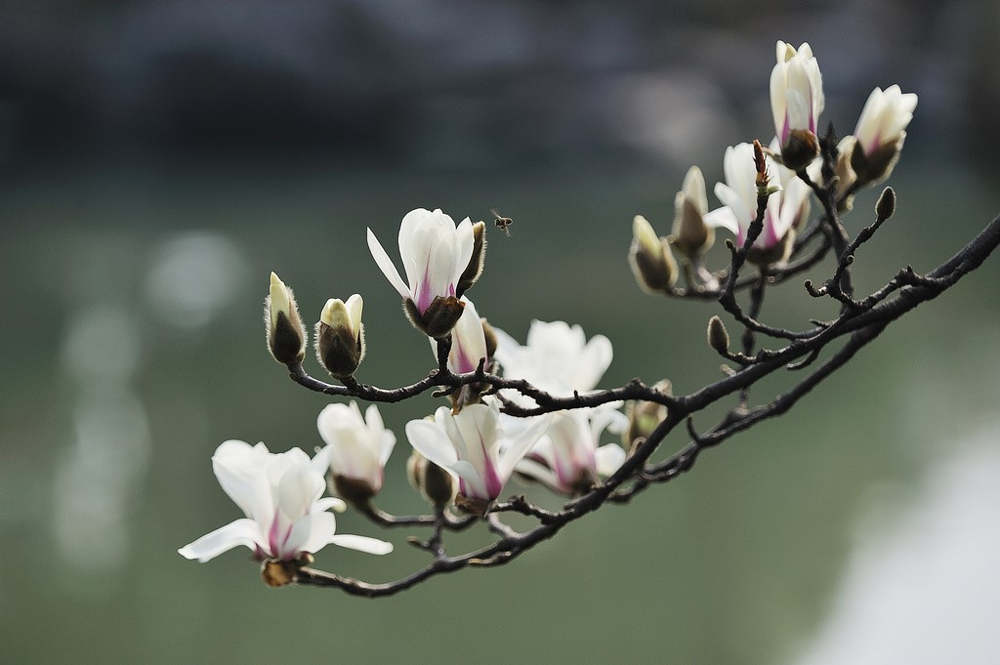
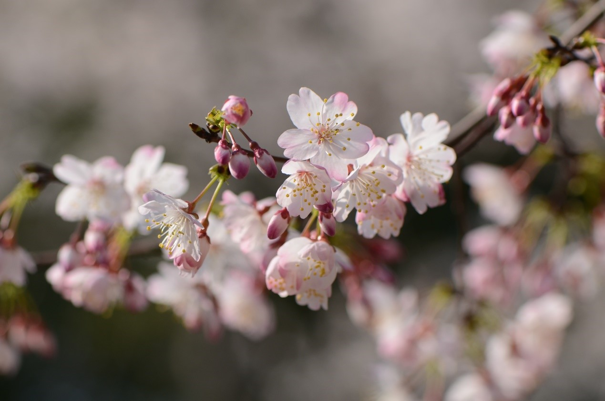
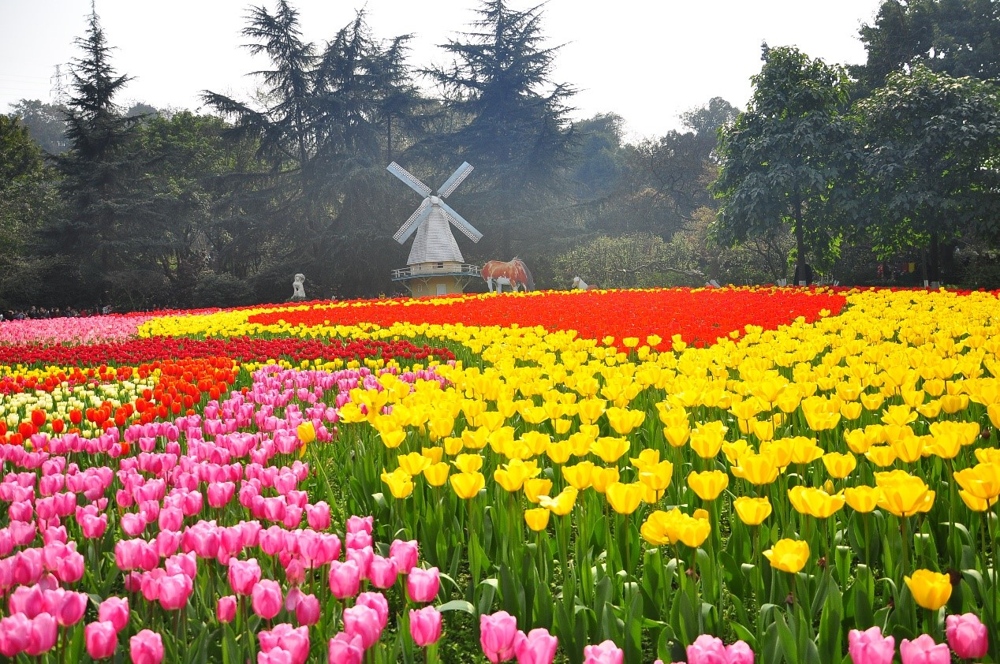
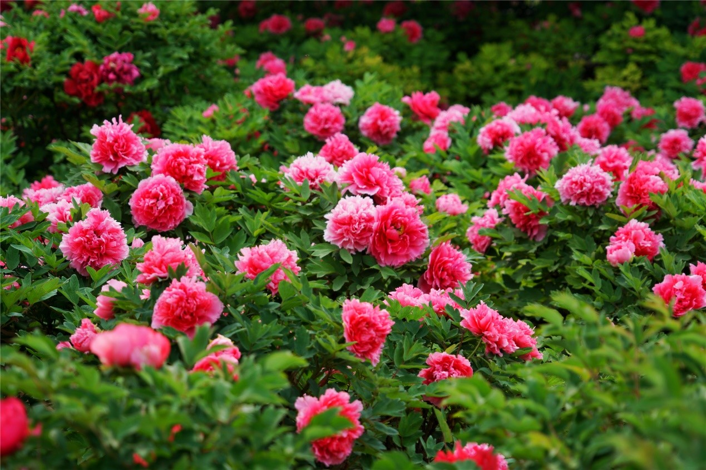
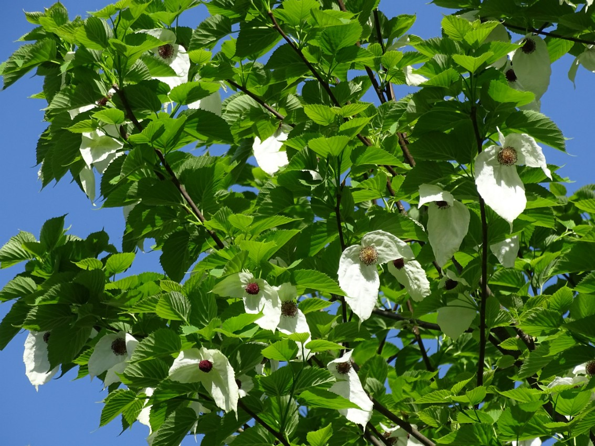
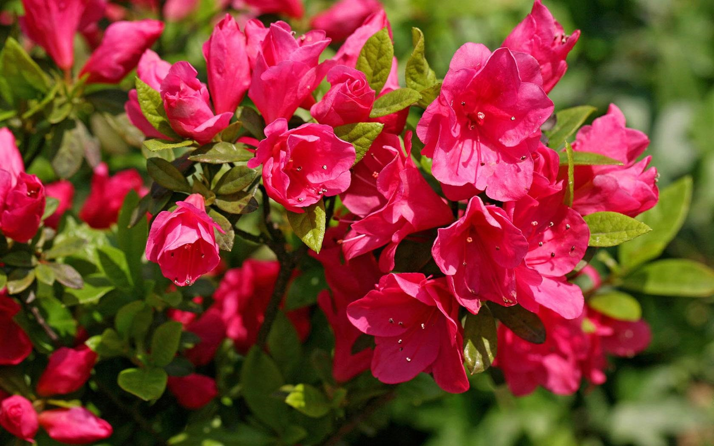

玉兰花展
时间：2月20日至5月10日
亮点：玉兰花花繁而大，美观典雅，清香远溢。园内分为木莲区、木兰区、含笑区和综合区四个大区，共收集并成功保育木兰科植物7属82种。黄山木兰、二乔玉兰、望春玉兰等30多个品种的玉圃琼林，将让您一睹玉兰家族之风采。
樱花展
时间：3月15日至4月15日
亮点：目前植物园樱花的盛花期持续1个月之久，突破了“樱花7日”的传统花期之说。800亩樱花园展出的不仅有大面积地道的日本国花染井吉野樱，还有粉色、红色、白色单瓣、重瓣樱花等。目前，湖南省森林植物园已经成为全国闻名的赏樱之地，并通过利用先进的夜景设计理念和LED电灯技术，打造全世界最好的“夜赏樱花”美景。


郁金香花展
时间：3月15日至4月15日
亮点：从荷兰引进135个品种、100万个种球，其中有紫色魔法、黄绣球等10余个从未在国内展出过的品种，以杜鹃广场、樱花湖周边、名花广场为主展区。
牡丹花展
时间：4月10日至4月25日
亮点：从牡丹之乡河南洛阳引进9个色系、120多个品种、10000多株牡丹。通过技术攻关，建成了最南端的最大实地栽培牡丹花展，使大面积实地牡丹栽培从北向南推进近500公里。


珙桐树花展
时间：4月20日至4月30日
亮点：珙桐是国家一级保护植物，花奇色美，花形似鸽子展翅，又名鸽子花，象征和平。
国家杜鹃展
时间：4月10日至5月10日
亮点：450亩的国家杜鹃园，展出120种100余万株形态各异、花色丰富的杜鹃花。
